공유압기능사 (2003-10-05 기출문제)
1과목: 임의구분
1. 유압동력을 직선왕복 운동으로 변환하는 기구는?
- 유압모우터
- 요동모우터
- 유압실린더
- 유압펌프
(정답률: 91%)

2. 입구측 압력을 그와 거의 비례한 높은 출력측 압력으로 변환하는 기기는?
- 축압기
- 차동기
- 여과기
- 증압기
(정답률: 81%)
3. 도면에 나타낸 유압회로에서, 실린더의 속도를 조절하는 방법으로 적당한 것은?
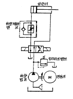
- 전동기의 회전수 조절
- 가변형 펌프의 사용
- 유량제어 밸브의 사용
- 차동 피스톤 펌프의 사용
(정답률: 91%)
4. 다음 유압기호의 명칭 중 옳은 것은?
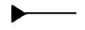
- 온도계
- 압력계
- 유량계
- 유압원
(정답률: 69%)
5. 다음 중 공기압 실린더의 구성요소가 아닌 것은?
- 피스톤(Piston)
- 커버(Cover)
- 베어링(Bearing)
- 타이 로드(Tie rod)
(정답률: 69%)
6. 다음 그림은 무슨 기호인가?
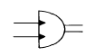
- 요동형 공기압 액튜에이터
- 요동형 유압 액튜에이터
- 유압 모터
- 공기압 모터
(정답률: 79%)
7. 공압용 솔레노이드 밸브의 전환 빈도로 알맞는 정도를 나타낸 것은?
- 매초 1회 이하
- 매초 10회 정도
- 매초 20회 정도
- 분당 1회 이하
(정답률: 67%)
8. 그림에서 유압기호는 무엇인가?
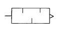
- 축압기
- 증압기
- 소음기
- 가열기
(정답률: 78%)
9. 어큐물레이터 회로의 목적에 해당되지 않는 것은?
- 저속 작동회로
- 압력 유지회로
- 압력 완충회로
- 보조 동력원회로
(정답률: 59%)
10. 윤활기의 작동 원리는?
- 파스칼의 원리
- 벤추리 원리
- 아르키메데스의 원리
- 보일· 샤를의 원리
(정답률: 62%)
11. 동력 전달 방식 중 공압식이 전기식 보다 유리한 점은?
- 동작속도
- 에너지 효율
- 소음
- 에너지 축척
(정답률: 66%)
12. 입력쪽 압력을 그에 비례한 높은 출구압력으로 변환하는 기기는?
- 사출 급유기
- 증압기
- 공유압 변환기
- 소음기
(정답률: 79%)
13. 유압유의 점성이 지나치게 큰 경우 나타나는 현상이 아닌 것은?
- 유동의 저항이 지나치게 많아진다
- 마찰에 의한 열이 발생한다
- 부품사이의 누출 손실이 커진다
- 마찰 손실에 의한 펌프의 동력이 많이 소비된다
(정답률: 67%)
14. 공유압 변환기의 사용상 주의점이 아닌 것은?
- 액추에이터 및 배관 내의 공기를 충분히 뺀다
- 공유압 변환기는 수평 방향으로 설치한다
- 열원의 가까이에서 사용하지 않는다
- 공유압 변환기는 반드시 액추에이터보다 높은 위치에 설치한다
(정답률: 82%)
15. 다음중 같은 크기의 실린더 직경으로 보다 큰 힘을 낼 수 있는 실린더는?
- 다위치제어 실린더
- 케이블 실린더
- 로드레스 실린더
- 탠덤 실린더
(정답률: 82%)
16. 유압 실린더를 사용하여 일을 할 때 실린더에 작용하는 부하의 변동은 실린더의 속도가 일정하지 않은 원인이 된다. 이와 같이 부하의 변동에도 항상 일정한 속도를 얻고자 할 때 사용하는 밸브는 다음 중 어느 것인가?
- 카운터밸런스 밸브
- 브레이크 밸브
- 압력보상형 유량제어 밸브
- 유체퓨즈
(정답률: 69%)
17. 다음은 어큐뮬레이터를 설치할 때 주의사항을 열거한 것이다. 틀린 것은?
- 어큐뮬레이터와 펌프사이에는 역류방지밸브를 설치한다.
- 어큐뮬레이터의 기름을 모두 배출시킬 수 있는 셧-오프 밸브를 설치한다.
- 펌프 맥동방지용은 펌프 토출측에 설치한다.
- 어큐뮬레이터는 수평으로 설치한다.
(정답률: 76%)
18. 유압실린더의 중간 정지회로에 파일럿 작동형 체크 밸브를 사용하는 이유로 적당한 것은?
- 실린더 내부의 누설방지
- 실린더 내 압력 평형의 유지
- 밸브 내부 누설방지
- 무부하 상태의 유지
(정답률: 45%)
19. 일반적으로 사용되는 압력계는 대부분 어떤 것을 택하는가?
- 게이지 압력
- 절대압력
- 평균압력
- 최고압력
(정답률: 72%)
20. 다음 공압 기호의 설명으로 옳은 것은?
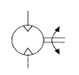
- 공기압 펌프 일반기호
- 양방향 유동 공기압 모터
- 1 방향 유동 정용량형 모터
- 2 방향 유동 가변 용량형 모터
(정답률: 78%)
2과목: 임의구분
21. 공압모터의 특징으로 맞는 것은?
- 압축공기 이외의 가스는 사용할 수 없다.
- 속도제어와 정역회전의 변환이 복잡하다.
- 시동정지가 원활하며, [출력/중량]비가 작다.
- 공기의 압축성으로 회전속도는 부하의 영향을 받는다
(정답률: 52%)
22. 다음과 같은 방향제어밸브의 명칭은?
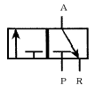
- 2 포트 2 위치 밸브
- 3 포트 2 위치 밸브
- 4 포트 2 위치 밸브
- 5 포트 2 위치 밸브
(정답률: 87%)
23. 시스템내의 압력이 최대 허용 압력을 초과하는 것을 방지해주는 것으로 주로 안전 밸브로 사용되는 것은?
- 압력 스위치
- 언로딩 밸브
- 시퀀스 밸브
- 릴리프 밸브
(정답률: 83%)
24. 그림의 기호가 나타내는 것은?
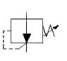
- 감압 밸브(reducing valve)
- 시퀀스 밸브(sequence valve)
- 릴리프 밸브(relief valve)
- 무부하 밸브(unloading valve)
(정답률: 73%)
25. 그림의 설명으로 맞는 것은?
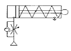
- 전진 속도를 조절한다
- 후진 속도를 조절한다
- 급속 귀환 운동을 한다
- 전진과 후진 출력을 높인다
(정답률: 72%)
26. 유압유의 주요기능이 아닌 것은?
- 동력을 전달한다
- 응축수를 배출한다.
- 마찰열을 흡수한다.
- 움직이는 기계요소를 윤활한다
(정답률: 61%)
27. 공압발생 장치의 구성상 필요 없는 장치는?
- 방향제어 밸브
- 에어쿨러
- 공기압축기
- 에어드라이어
(정답률: 69%)
28. 밸브의 양쪽 입구로 고압과 저압이 각각 유입될 때 고압쪽이 출력되고 저압쪽이 폐쇄되는 밸브는?
- OR밸브
- 체크밸브
- AND밸브
- 급속배기밸브
(정답률: 61%)
29. 유압모터를 선택하기 위한 고려사항이 아닌 것은?
- 체적 및 효율이 우수할 것
- 모터의 외형 공간이 충분히 클 것
- 주어진 부하에 대한 내구성이 클 것
- 모터로 필요한 동력을 얻을 수 있을 것
(정답률: 82%)
30. 다음 그림은 유압제어방식을 나타낸 것이다. 어떤 제어방식인가?
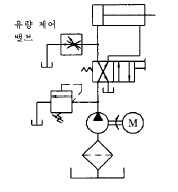
- 미터인회로
- 미터아웃회로
- 블리드오프회로
- 리사이클링회로
(정답률: 67%)
31. 다음 중 주울의 법칙을 설명한 것 중 맞는 것은?(단, 여기서 H는 열량)
- H = I2Rt[J]
- H = 0.24IRt[㎈]
- 1[KWh] = 860[㎈]
- 1[J]=1/9.186[㎈]
(정답률: 57%)
32. 전원이 V결선된 경우 부하에 전달되는 전력은 △결선인 경우의 몇 [%]인가?
- 57.7
- 86.6
- 100
- 147
(정답률: 62%)
33. 그림과 같은 회로의 명칭은?
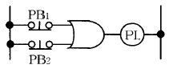
- OR회로
- AND회로
- NOT회로
- NOR회로
(정답률: 58%)
34. 회로 시험기 사용에서 저항 측정시 전환 스위치를 R抉 100에 놓았을 때 계기의 바늘이 50[Ω]을 가리켰다면 측정된 저항값은?
- 50[Ω]
- 100[Ω]
- 500[Ω]
- 5000[Ω]
(정답률: 74%)
35. 다음의 직류 전동기 중에서 무부하 운전이나 벨트 운전을 절대로 해서는 안 되는 전동기는?
- 타여자 전동기
- 복권 전동기
- 직권 전동기
- 분권 전동기
(정답률: 74%)
36. 변압기의 온도 상승을 억제하기 위해서 갖추어야 할 변압기유의 조건으로 틀린 것은?
- 절연내력이 작을 것
- 인화점이 높을 것
- 응고점이 낮을 것
- 화학적으로 안정될 것
(정답률: 71%)
37. 그림은 어떤 회로인가?
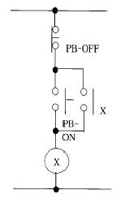
- 정지 우선 회로
- 기동 우선 회로
- 신호 검출 회로
- 인터로크 회로
(정답률: 64%)
38. 직류 전류 측정에 가장 적당한 계기는?
- 전류력계형 계기
- 가동 철편형 계기
- 가동 코일형 계기
- 유도형 계기
(정답률: 46%)
39. 자기회로의 옴의 법칙에 대한 설명 중 맞는 것은?
- 자기회로의 기자력은 자속에 반비례한다.
- 자기회로를 통하는 자속은 자기저항에 비례하고, 기자력에 반비례한다.
- 자기회로의 기자력은 자기저항에 반비례한다.
- 자기회로를 통하는 자속은 기자력에 비례하고, 자기저항에 반비례한다.
(정답률: 59%)
40. 변압기 및 전기기기의 철심으로 얇은 철판을 겹쳐서 사용하는 이유는?
- 가공하기 쉽기 때문이다.
- 가격이 싸기 때문이다.
- 맴돌이 전류손에 의한 줄열 때문이다.
- 철의 비중이 크기 때문이다,
(정답률: 82%)
3과목: 임의구분
41. 검출스위치가 아닌 것은?
- 리밋 스위치
- 광전 스위치
- 버튼 스위치
- 근접 스위치
(정답률: 69%)
42. 저항만의 회로에서 전압에 대한 전류의 위상은?
- 90° 앞선다.
- 60° 뒤진다.
- 30° 앞선다.
- 동상이다.
(정답률: 65%)
43. 지름 20[㎝], 권수 100회의 원형 코일에 1[A]의 전류를 흘릴 때 코일 중심 자장의 세기[AT/m]는?
- 200
- 300
- 400
- 500
(정답률: 34%)
44. 반도체 PN접합이 하는 작용은?
- 정류 작용
- 증폭 작용
- 발진 작용
- 변조 작용
(정답률: 71%)
45. 그림과 같은 회로에서 IT=10[A]일 때 4[Ω ]에 흐르는 전류[A]는?
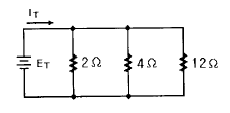
- 3
- 4
- 5
- 6
(정답률: 45%)
46. 평면, 측면, 정면을 하나의 투상면 위에 동시에 볼 수 있도록 같은 기울기로 그려진 도법은?
- 등각 투상법
- 국부 투상법
- 정 투상법
- 경사 투상법
(정답률: 61%)
47. 기계구조물의 용접부 등에 비파괴검사 시험기호에서 RT로 표시된 기호가 뜻하는 것은?
- 방사선 투과 시험
- 자분 탐상 시험
- 초음파 탐상 시험
- 침투 탐상 시험
(정답률: 71%)
48. 보기에서와 같이 입체도를 제3각법으로 그린 투상도에 관한 설명으로 올바른 것은?
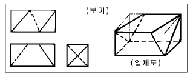
- 평면도 만 틀림
- 정면도 만 틀림
- 우측면도 만 틀림
- 모두 올바름
(정답률: 80%)
49. 다음 중 지그재그 선을 사용하는 경우는?
- 도면내 그 부분의 단면을 90° 회전하여 나타내는 선.
- 제품의 일부를 파단한 곳을 표시하는 선.
- 인접을 참고로 표시하는 선.
- 반복을 표시하는 선.
(정답률: 75%)
50. 보기와 같은 정면도와 평면도의 우측면도로 가장 적합한 투상은?
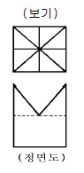
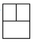
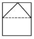
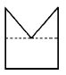
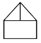
(정답률: 77%)
51. 치수기입 중 정정치수 기입방법으로 가장 적합한 것은?
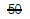
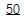
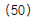
(정답률: 75%)
52. 배관도에서 파이프 내에 흐르는 유체가 수증기일 때의 기호는?
- A
- G
- O
- S
(정답률: 75%)
53. 기계설계시 연강재를 사용할 때 안전율을 가장 크게 선정 해야 할 하중은?
- 정하중
- 반복하중
- 교번하중
- 충격하중
(정답률: 71%)
54. 막대의 양끝에 나사를 깎은 머리없는 볼트로서 볼트를 끼우기 어려운 곳에 미리 볼트를 심어 놓고 너트를 조일수 있도록 한 볼트는?
- 기초 볼트
- 스테이 볼트
- 스터드 볼트
- 충격 볼트
(정답률: 65%)
55. 축을 작용하는 힘에 의해 분류했을때, 전동축에 관한 설명으로 가장 옳은 것은?
- 주로 휨 하중을 받는다.
- 주로 인장과 휨 하중을 받는다.
- 주로 압축 하중을 받는다.
- 주로 휨과 비틀림하중을 받는다.
(정답률: 58%)
56. 모듈이 5 이고, 잇수가 24개와 56개인 두개의 평기어가물고 있다. 이 두기어의 중심거리는?
- 200 ㎜
- 220 ㎜
- 250 ㎜
- 300 ㎜
(정답률: 59%)
57. 나사홈의 높이가 나사산의 높이와 같게한 원통의 지름은?
- 호칭 지름
- 수나사 바깥지름
- 피치 지름
- 리드
(정답률: 51%)
58. 두 축의 이음을 임의로 단속할 수 있는 축 이음은?
- 클러치
- 특수 커플링
- 플랜지 커플링
- 플렉시블 커플링
(정답률: 61%)
59. 빠른 반복하중을 받는 스프링의 압축, 인장 반복속도가 고유진동수에 가까워지면 심한 진동을 일으키는데 이런 공진현상을 무엇이라고 하는가?
- 피로
- 서징
- 응력 집중
- 감쇠
(정답률: 69%)
60. 응력에 대한 설명 중 가장 올바른 것은?
- 단위 면적에 대한 변형의 크기로 나타낸다.
- 외력에 대하여 물체 내부에서 대응하는 저항력을 말한다.
- 전단응력은 경사응력과 같은 의미이다.
- 물체에 하중을 작용시켰을 때 하중방향에 발생한 응력을 전단응력이라 한다.
(정답률: 53%)